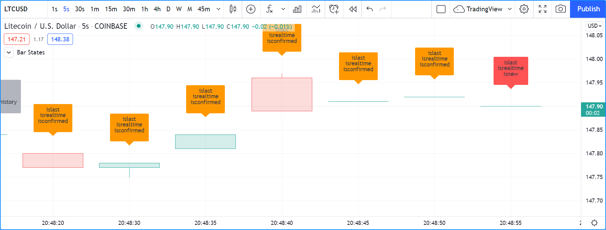
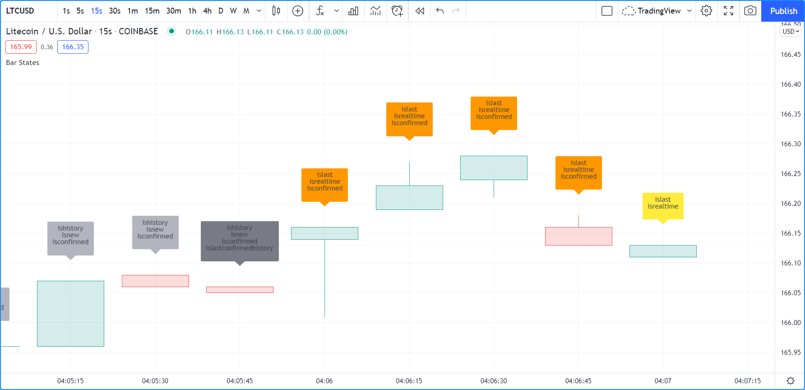

Bar states¶
Introduction¶
A set of built-in variables in the barstate namespace allow your script to detect different properties of the bar on which the script is currently executing.
These states can be used to restrict the execution or the logic of your code to specific bars.
Some built-ins return information on the trading session the current bar belongs to. They are explained in the Session states section.
Bar state built-in variables¶
Note that while indicators and libraries run on all price or volume updates in real time, strategies not using calc_on_every_tick will not;
they will only execute when the realtime bar closes. This will affect the detection of bar states in that type of script.
On open markets, for example, this code will not display a background until the realtime closes because that is when the strategy runs:
//@version=5
strategy("S")
bgcolor(barstate.islast ? color.silver : na)
`barstate.isfirst`¶
barstate.isfirst
is only true on the dataset’s first bar, i.e., when bar_index is zero.
It can be useful to initialize variables on the first bar only, e.g.:
// Declare array and set its values on the first bar only.
FILL_COLOR = color.green
var fillColors = array.new_color(0)
if barstate.isfirst
// Initialize the array elements with progressively lighter shades of the fill color.
array.push(fillColors, color.new(FILL_COLOR, 70))
array.push(fillColors, color.new(FILL_COLOR, 75))
array.push(fillColors, color.new(FILL_COLOR, 80))
array.push(fillColors, color.new(FILL_COLOR, 85))
array.push(fillColors, color.new(FILL_COLOR, 90))
`barstate.islast`¶
barstate.islast
is true if the current bar is the last one on the chart, whether that bar is a realtime bar or not.
It can be used to restrict the execution of code to the chart’s last bar, which is often useful when drawing lines, labels or tables.
Here, we use it to determine when to update a label which we want to appear only on the last bar.
We create the label only once and then update its properties using label.set_*() functions because it is more efficient:
//@version=5
indicator("", "", true)
// Create label on the first bar only.
var label hiLabel = label.new(na, na, "")
// Update the label's position and text on the last bar,
// including on all realtime bar updates.
if barstate.islast
label.set_xy(hiLabel, bar_index, high)
label.set_text(hiLabel, str.tostring(high, format.mintick))
`barstate.ishistory`¶
barstate.ishistory
is true on all historical bars. It can never be true on a bar when
barstate.isrealtime is also true,
and it does not become true on a realtime bar’s closing update, when
barstate.isconfirmed becomes true.
On closed markets, it can be true on the same bar where barstate.islast
is also true.
`barstate.isrealtime`¶
barstate.isrealtime
is true if the current data update is a real-time bar update, false otherwise (thus it is historical).
Note that barstate.islast is also true on all realtime bars.
`barstate.isnew`¶
barstate.isnew
is true on all historical bars and on the realtime bar’s first (opening) update.
All historical bars are considered new bars because the Pine Script® runtime executes your script on each bar sequentially, from the chart’s first bar in time, to the last. Each historical bar is thus discovered by your script as it executes, bar to bar.
barstate.isnew
can be useful to reset varip variables when a new realtime bar comes in.
The following code will reset updateNo to 1 on all historical bars and at the beginning of each realtime bar.
It calculates the number of realtime updates during each realtime bar:
//@version=5
indicator("")
updateNo() =>
varip int updateNo = na
if barstate.isnew
updateNo := 1
else
updateNo += 1
plot(updateNo())
`barstate.isconfirmed`¶
barstate.isconfirmed
is true on all historical bars and on the last (closing) update of a realtime bar.
It can be useful to avoid repainting by requiring the realtime bar to be closed before a condition can become true.
We use it here to hold plotting of our RSI until the realtime bar closes and becomes an elapsed realtime bar.
It will plot on historical bars because barstate.isconfirmed
is always true on them:
//@version=5
indicator("")
myRSI = ta.rsi(close, 20)
plot(barstate.isconfirmed ? myRSI : na)
barstate.isconfirmed will not work when used in a request.security() call.
`barstate.islastconfirmedhistory`¶
barstate.islastconfirmedhistory
is true if the script is executing on the dataset’s last bar when the market is closed, or on the bar immediately preceding the realtime bar if the market is open.
It can be used to detect the first realtime bar with barstate.islastconfirmedhistory[1], or to postpone server-intensive calculations until the last historical bar, which would otherwise be undetectable on open markets.
Example¶
Here is an example of a script using barstate.* variables:
//@version=5
indicator("Bar States", overlay = true, max_labels_count = 500)
stateText() =>
string txt = ""
txt += barstate.isfirst ? "isfirst\n" : ""
txt += barstate.islast ? "islast\n" : ""
txt += barstate.ishistory ? "ishistory\n" : ""
txt += barstate.isrealtime ? "isrealtime\n" : ""
txt += barstate.isnew ? "isnew\n" : ""
txt += barstate.isconfirmed ? "isconfirmed\n" : ""
txt += barstate.islastconfirmedhistory ? "islastconfirmedhistory\n" : ""
labelColor = switch
barstate.isfirst => color.fuchsia
barstate.islastconfirmedhistory => color.gray
barstate.ishistory => color.silver
barstate.isconfirmed => color.orange
barstate.isnew => color.red
=> color.yellow
label.new(bar_index, na, stateText(), yloc = yloc.abovebar, color = labelColor)
Note that:
- Each state’s name will appear in the label’s text when it is
true. - There are five possible colors for the label’s background:
- fuchsia on the first bar
- silver on historical bars
- gray on the last confirmed historical bar
- orange when a realtime bar is confirmed (when it closes and becomes an elapsed realtime bar)
- red on the realtime bar’s first execution
- yellow for other executions of the realtime bar
We begin by adding the indicator to the chart of an open market, but before any realtime update is received. Note how the last confirmed history bar is identified in #1, and how the last bar is identified as the last one, but is still considered a historical bar because no realtime updates have been received.

Let’s look at what happens when realtime updates start coming in:
Note that:
- The realtime bar is red because it is its first execution,
because
barstate.isnewistrueandbarstate.ishistoryis no longertrue, so our switch structure determing our color uses thebarstate.isnew => color.redbranch. This will usually not last long because on the next updatebarstate.isnewwill no longer betrueso the label’s color will turn yellow. - The label of elapsed realtime bars is orange because those bars were not historical bars when they closed.
Accordingly, the
barstate.ishistory => color.silverbranch in the switch structure was not executed, but the next one,barstate.isconfirmed => color.orangewas.
This last example shows how the realtime bar’s label will turn yellow after the first execution on the bar. This is the way the label will usually appear on realtime bars:
